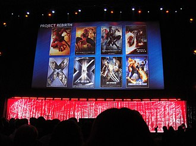
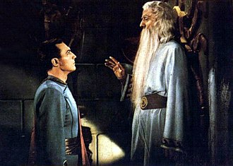
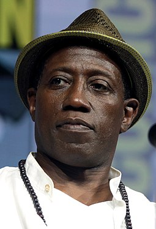
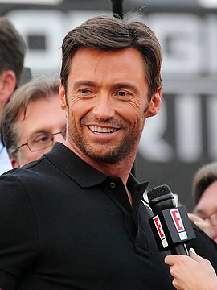
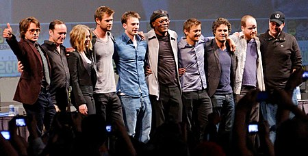

"Superhero movie" redirects here. For the 2008 film, see Superhero Movie.
A superhero film (or superhero movie) is a film that focuses on the actions of superheroes. Superheroes are individuals who possess superhuman abilities and are dedicated to protecting the public. These films typically feature action, adventure, fantasy, or science fiction elements. The first film of a particular character often focuses on the hero's origin story. The first film also frequently introduces the hero's nemesis. (See also: supervillain or archnemesis.)
Many superhero films are based on superhero comics. By contrast, films such as the Ultraman, Kamen Rider and Super Sentai franchises, the RoboCop series, The Meteor Man, the Unbreakable film series, Hancock and They Call Me Jeeg, were made original for the screen. While The Green Hornet is based primarily on the original radio series and its 1960s television adaptation, both Underdog and The Powerpuff Girls are based on animated television series. Anime superhero films are based on manga and television shows.
The highest grossing superhero film franchises (according to the box office income) since 1967 are Tsuburaya Productions' Ultra Series, Toei Company's Kamen Rider and Super Sentai, New Line Cinema's Blade, 20th Century Fox's X-Men, Sony Pictures' Spider-Man trilogy directed by Sam Raimi and the Amazing Spider-Man duology directed by Marc Webb, Pixar's The Incredibles, Christopher Nolan's The Dark Knight Trilogy, the Marvel Cinematic Universe (MCU), and the DC Extended Universe (DCEU). On its own, the superhero film has become a popular genre of film, earning over $25 billion dollars for Marvel alone.[1][2][3]
Almost immediately after superheroes rose in popularity because of comic books (see List of DC Comics Characters and List of Marvel Comics characters), they were adapted into Saturday film serials, starting with Mandrake the Magician (1939). Serials such as The Shadow (1940), Adventures of Captain Marvel (1941), Batman (1943), The Phantom (1943), Captain America (1944), Superman (1948) followed.
In the following decades, the decline of Saturday serials and turmoil in the comic book industry put an end to superhero motion pictures, with the exception of Superman and the Mole Men (1951), starring George Reeves, which was a trial balloon for the television series Adventures of Superman, compilations of episodes of that same series released theatrically, and Batman (1966) a big-screen extension of the Batman television series starring Adam West.[4]
In 1957 Japan, Shintoho produced the first film serial featuring the tokusatsu superhero character Super Giant, signaling a shift in Japanese popular culture towards masked superheroes in tokusatsu. Along with Astro Boy, the Super Giant film series greatly influenced later Japanese tokusatsu superhero films.[5] Moonlight Mask also became popular around that time, with six films retelling the story of the TV series being made.[6] Another early superhero film was Ōgon Bat (1966), a Japanese film starring Sonny Chiba based on the 1931 Kamishibai superhero Ōgon Bat.[7]
The kaiju monster Godzilla, originally a villain, began being portrayed as a superhero in the Godzilla films.[8] He has been described as "the original radioactive superhero" due to his nuclear origin story predating Spider-Man (1962 debut),[8] although Godzilla did not become a hero until Ghidorah, the Three-Headed Monster (1964).[9] By the 1970s, Godzilla came to be viewed as a superhero, with the magazine King of the Monsters in 1977 describing Godzilla as "Superhero of the '70s." Godzilla was "the most universally popular superhero of 1977" according to Donald F. Glut.[10]
The year 1966 saw the debut of the Ultra Series with kaiju TV show Ultra Q. However, with the release of the original Ultraman, the franchise started focusing on superheroes. In 1967, Ultraman started expanding to films. Early films, such as Ultraman: Monster Movie Feature were compilations or theatrical releases of TV shows' episodes. The first original Ultraman film was a co-production with Thailand, The 6 Ultra Brothers vs. the Monster Army.[11]
The popularity of television superheroes in Japan led to the start of the Kamen Rider and Super Sentai franchises by famous manga artist Shotaro Ishinomori in 1971 and 1975, respectively. Just like with Ultraman, many early Kamen Rider and Super Sentai episodes were released as films. Original Kamen Rider films released before 1978 include Kamen Rider vs. Shocker, Kamen Rider vs. Ambassador Hell, Kamen Rider V3 vs. Destron Mutants and Five Riders vs. King Dark.
Original superhero characters emerged in other, more comedy oriented films such as the French political satire film Mr. Freedom (1969), the Polish parody Hydrozagadka (1970) and the American B movies, Rat Pfink a Boo Boo (1966), and The Wild World of Batwoman (1966).[12][13]
Riding a wave of a new interest in fantasy and science fiction films with the success of Star Wars, Richard Donner's Superman (1978), the first major big-budget DC feature film, proved a critical and commercial success. The same year, Toei Company's Spider-Man reimagining and the first Super Sentai crossover film, JAKQ Dengekitai vs. Gorenger, were released. Other successful entries emerged throughout the 1980s, including Eight Riders vs. Galaxy King (1980), Kamen Rider Super-1: The Movie (1981), Richard Lester's Superman II (1981), Spider-Man: The Dragon's Challenge (1981) and Paul Verhoeven's RoboCop (1987). Then there was Kamen Rider Black: Hurry to Onigashima and Kamen Rider Black: Terrifying! The Phantom House of Devil Pass, both released in 1988.
Other superhero films released during the 1980s include Denshi Sentai Denziman: The Movie (1980), Flash Gordon (1980), Taiyo Sentai Sun Vulcan: The Movie (1981), Dai Sentai Goggle V: The Movie (1982), Swamp Thing (1982) and, Kagaku Sentai Dynaman: The Movie (1983), sequel, Superman III (1983), Choudenshi Bioman: The Movie (1984), Supergirl (1984), Ultraman Zoffy: Ultra Warriors vs. the Giant Monster Army (1984), Ultraman Story (1984), Dengeki Sentai Changeman: The Movie and Dengeki Sentai Changeman: Shuttle Base! The Critical Moment! (1985), The Toxic Avenger (1985), Choushinsei Flashman: The Movie (1986), Choushinsei Flashman: Big Rally! Titan Boy! (1987), Hikari Sentai Maskman: The Movie (1987), Superman IV: The Quest for Peace (1987), Masters of the Universe (1987), Bollywood's Mr. India (1987), Ultraman: The Adventure Begins (1987), RoboCop (1987), Kousoku Sentai Turboranger: The Movie (1989), and The Punisher (1989).
Superhero movies from the 1990s include Teenage Mutant Ninja Turtles (1990) and its two sequels, RoboCop 2 (1990), Darkman (1990), Sgt. Kabukiman N.Y.P.D. (1990), The Rocketeer (1991), Shin Kamen Rider: Prologue (1992), RoboCop 3 (1993), the animated Batman: Mask of the Phantasm (1993), Kamen Rider ZO (1993), Kamen Rider J (1994), Gosei Sentai Dairanger: The Movie, The Shadow (1994), The Mask (1994), Ninja Sentai Kakuranger: The Movie (1994), Blankman (1994), Chouriki Sentai Ohranger: The Movie (1995), Batman Forever (1995), Judge Dredd (1995), Tank Girl (1995), Mighty Morphin' Power Rangers: The Movie (1995) and a sequel, Barb Wire (1996), The Phantom (1996), Black Mask (1996), Chouriki Sentai Ohranger: Ole vs. Kakuranger (1996), Revive! Ultraman (1996), Gekisou Sentai Carranger vs. Ohranger (1997) and Steel (1997).[15][16][17] Marvel Comics' Captain America (1991) did not have a theatrical release and Roger Corman's The Fantastic Four (1994), produced solely for the legal maintenance of the film rights to the property[18] was released neither theatrically nor on home video.[15]
In 1998, Marvel released Blade, a mix of a traditional action film as well a darker superhero film, with the title character having vampiric powers as well as carrying an arsenal of weaponry.[19] The success of Blade began Marvel's film success and set the stage for further comic book film adaptations.[27][28] Meanwhile, thanks to the popularity of Ultraman Tiga TV series, several films based on it and later installments were produced. These include Ultraman Tiga & Ultraman Dyna: Warriors of the Star of Light (1998), Ultraman Gaia: The Battle in Hyperspace (1999) and Ultraman Tiga: The Final Odyssey (2000). The Matrix (1999) also had an impact on superhero films. Influenced by comic books, cyberpunk fiction, Japanese anime, and Hong Kong action films, The Matrix effectively "reinvented" the superhero film, according to Adam Sternbergh of Vulture.com, crediting The Matrix with setting the template for modern superhero blockbusters and inspiring the superhero renaissance in the early 21st century.[29] John Kenneth Muir in The Encyclopedia of Superheroes on Film and Television called the film a "revolutionary" reimagination of movie visuals, paving the way for the visuals of later superhero films, and credits it with helping to "make comic-book superheroes hip" and its bullet time effect effectively demonstrating the concept of "faster than a speeding bullet" on-screen.[30] Inspector Gadget and Mystery Men would then follow to close out the decade for the subgenre.
After the comic book boom and the success of several comic book adaptation films (including superhero films) in the 1990s,[31] the first decade of the 21st century brought increased interest in superhero films and some of their most profitable franchises, many from Marvel Enterprises. The success of the X-Men TV series made 20th Century Fox licenses the film rights in 1994.[32] After the success of Men in Black in 1997, Columbia Pictures licensed the film rights of Spider-Man in 1999.[33] 20th Century Fox's X-Men (2000) became a film franchise by its surprise hit,[34] and M. Night Shyamalan's Unbreakable (2000)[35] also succeeded and added an element of more urban naturalism.[36] Later, one of the largest blockbusters of all time was released with Sam Raimi's Spider-Man (2002).[37] In 2004, Ultraman: The Next was released, which was a remaining of the original series and the franchise as a whole.[38] With high ticket and DVD sales, numerous new superhero films were released every year in the 2000s, including Faust: Love of the Damned (2000), Blade II (2002), Daredevil (2003), The League of Extraordinary Gentlemen (2003), Hulk (2003), X2: X-Men United (2003), Blade: Trinity (2004), Casshern (2004), Catwoman (2004), Hellboy (2004), The Punisher (2004), the semi-animated Sky Captain and the World of Tomorrow (2004), Spider-Man 2 (2004), Elektra (2005), Constantine (2005), Fantastic Four (2005), Malaysia's Cicak Man (2006), India's Krrish (2006), Thailand's Mercury Man (2006), X-Men: The Last Stand (2006), Fantastic Four: Rise of the Silver Surfer (2007), Ghost Rider (2007), Chile's Mirageman (2007), Spider-Man 3 (2007), TMNT (2007), Drona (2008) and Hellboy II: The Golden Army (2008).
Brad Bird's The Incredibles (2004) for Pixar was a critically acclaimed computer-animated superhero film aimed towards families.[39] Other hybrids include Sky High (2005) and Zoom (2006) which were fusions of superhero and family film, as well as My Super Ex-Girlfriend (2006) a combination of superhero and romantic comedy.[40][41]
Some series from the current and previous decades were re-released, such as Superman II: The Richard Donner Cut (2006).[42] Other series discarded the continuities of previously released films and began a reboot, most notably Christopher Nolan's Batman Begins (2005), Louis Leterrier's The Incredible Hulk (2008) and Lexi Alexander's Punisher: War Zone (2008). Bryan Singer's Superman Returns (2006) stands out in that it is a sequel to the first two Superman films, yet also a reboot of the third and fourth films.[43] The Batman Begins sequel The Dark Knight (2008) received eight nominations at the Academy Awards with two wins for Best Sound Editing and Best Supporting Actor for Heath Ledger's portrayal of The Joker.
As superhero film production increased during the latter end of the 2010s, the genre's contribution to cinema was questioned. Martin Scorsese, in an interview with Empire magazine, commented that "as well made as they are, with actors doing the best they can under the circumstances, is theme parks. It isn't the cinema of human beings trying to convey emotional, psychological experiences to another human being." He stated that the Marvel films were not "cinema".[110] He later clarified his opinion as being worried about studios' overreliance, believing that in "many places around this country and the world, franchise films are now your primary choice if you want to see something on the big screen. It’s a perilous time in film exhibition, and there are fewer independent theaters than ever."[111] Criticism of Marvel Studios' films continued with Jennifer Aniston stating that Marvel movies are "diminishing" and believed that there should be a “resurgence” of “the era of Meg Ryan.” “Let’s get the Terms of Endearment back out there. You know, Heaven Can Wait, Young Frankenstein, Blazing Saddles, Goodbye Girl.”[112] Denis Villeneuve dismissed "too many Marvel films" being "a cut and paste of others"[113] and Roland Emmerich stating that large blockbuster films such as the MCU and Star Wars films were "ruining our industry a little" since "nobody does anything original anymore".[114] However, in March 2022, Nicolas Cage stated that “Marvel has done a really excellent job of entertaining the whole family. They put a lot of thought into it. I mean, it’s definitely had a big progression from when I was doing the first two ‘Ghost Rider’ movies. Kevin Feige, or whoever is behind that machine, has found a masterful way of weaving the stories together and interconnecting all the characters. What could be wrong with wholesome entertainment that is appealing to the parents and the children, and gives people something to look forward to?” Cage asked. “I just, I don’t see what the issue is.”[115]
Some media commentators have attributed the increased popularity of superhero franchises in the new millennium to the social and political climate in Western society since the September 11, 2001 terrorist attacks,[116] although others have argued advances in special effects technology have played a more significant role.[117] Others have postulated that its box office dominance is in part due to its flexibility, a shared trait from its original publishing origins. Namely, the editorial realities of comic book publishing, which can have series running for decades, encouraged writers to resort to a variety of story situations so diverse from the fantastic to the relatively realistic, for so long and so often that it has become an expected element of the genre to have such adaptability.[118] For example, with the common element being that they all feature heroes with extraordinary abilities and typically in a distinctive costume, many successful superhero films have used a plethora of genres such as horror (Blade), thriller (Unbreakable), period drama (Captain America: The First Avenger), space opera (Guardians of the Galaxy), family film (The Incredibles), teen film (Spider-Man: Homecoming), heist film (Ant-Man), fantasy (Doctor Strange), neo-noir (The Dark Knight), political thriller (Captain America: The Winter Soldier), and Western (Logan).[119]